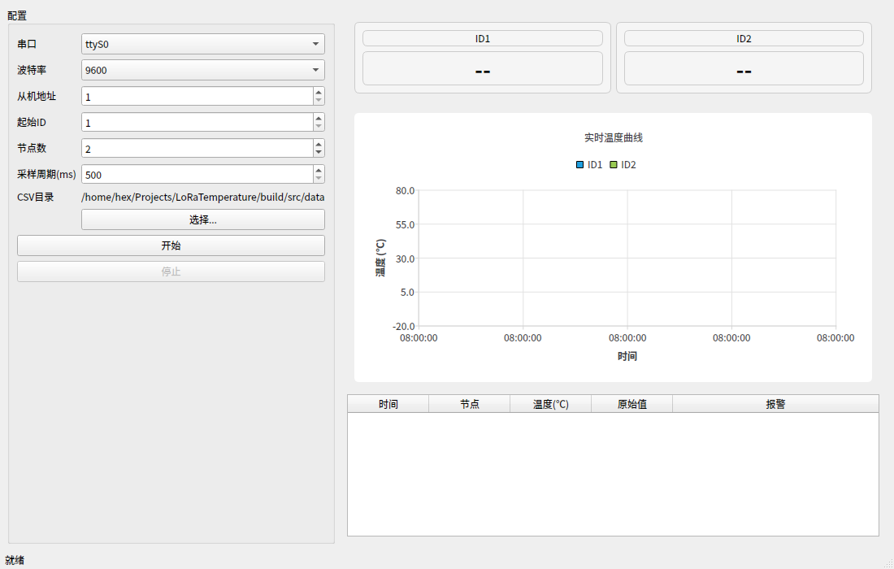

LoRa 温度实时监测应用 - 界面预览
分辨率：
1100 x 700 |
平台：
Qt 6.10.1 offscreen 渲染

界面说明
左侧
配置面板：串口选择、波特率、从机地址、起始ID、节点数、采样周期、CSV目录、开始/停止按钮
右上
温度卡片：每个节点一张卡片，大字号显示当前温度（未采集时显示"--"），报警时变色
中部
实时曲线：QtCharts 绘制，X轴为时间，Y轴为温度，每节点一条曲线，保留最近30分钟
底部
数据表格：时间、节点、温度、原始值、报警状态，最新置顶，最多500行
运行状态
编译：
通过
（CMake + Qt6.10.1）
单元测试：
3/3 全部 PASS
（tst_sample / tst_appconfig / tst_csvwriter）
界面初始化：
正常
（卡片、曲线、表格均正确渲染）
功能测试：
需硬件联调
（无传感器时点"开始"会提示串口错误）